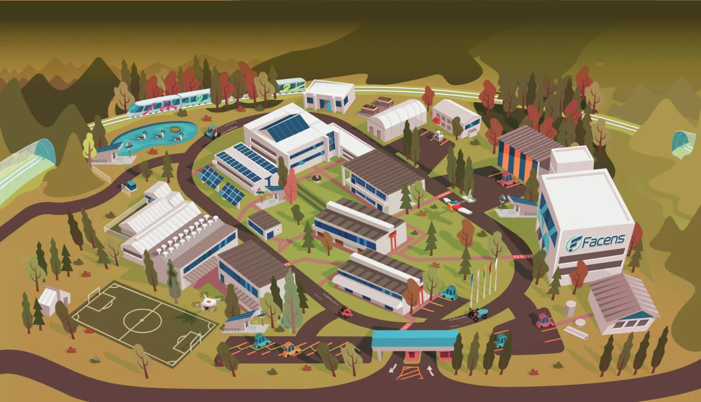

Meu Bairro Conecta
Campus Facens · piloto
Comunidade
Gestão
0
?
Locais
Resolvidas
📍 GPS

+
−
⤢
◎
Toque no mapa onde está o problema
📍 Aqui (GPS)
Cancelar
+
Registrar
🗺️
Mapa
📋
Lista
📊
Painel
🧭
Rota
🔔
Alertas
Lista
Painel
Rota
Alertas
×
×
Nova ocorrência
⚠️ Problema
💡 Sugestão de melhoria
Categoria
Título
Descrição
Foto (opcional)
Cancelar
Publicar
Pular
Próximo